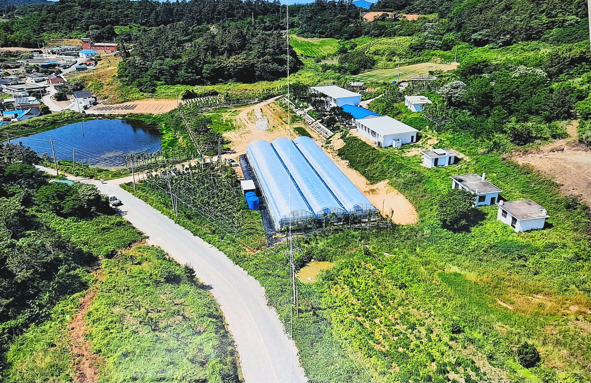
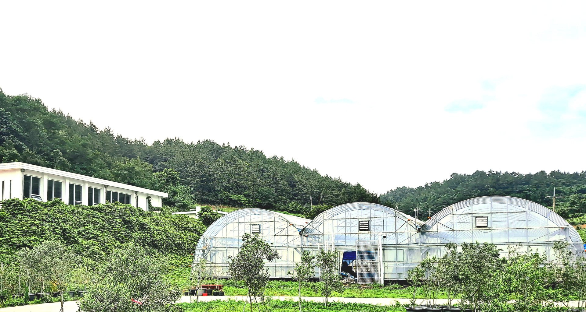
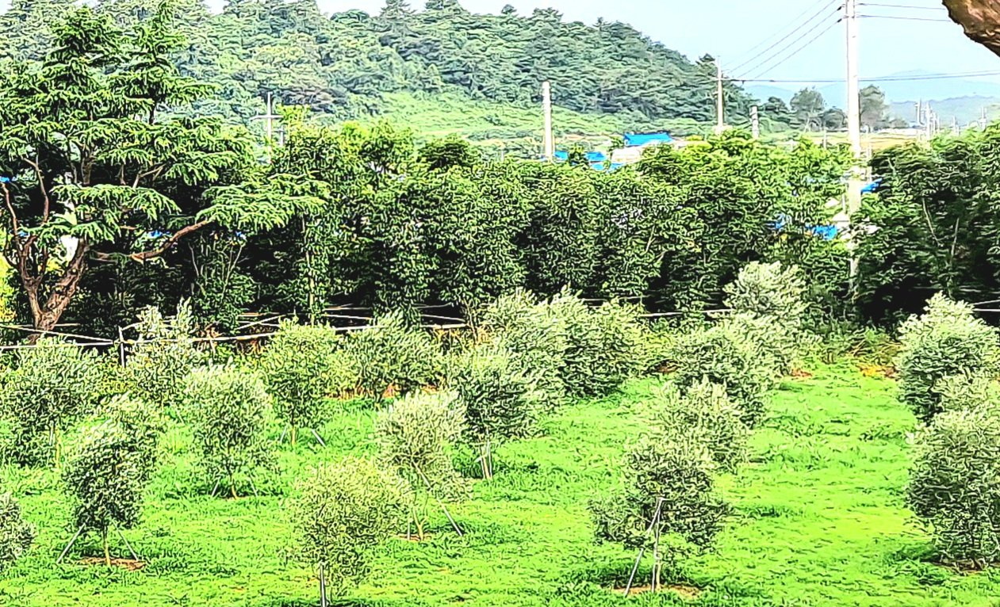
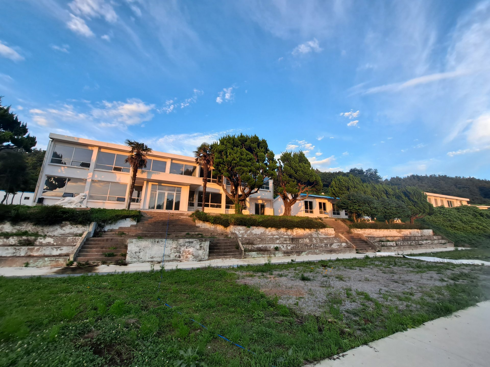

사회적협동조합 신안올리브협회는 지역 주민의 참여와 상생 협력, 자주적·자립적·자치적인 조합 활동을 통하여 지속가능한 올리브 농산업 모델을 조성·확산하고, 자립적인 지역경제 균형발전과 건전한 지역 공동체 구축에 기여함을 목적으로 합니다. (정관 제2조)
국내 올리브 재배는 2010년 제주에서 시작되어 기후 변화와 함께 남해안과 도서 지역으로 확산되고 있습니다. 전국 올리브 재배 농가의 상당수가 이곳 신안에 있으며, 신의면에서만 20여 농가가 올리브 농업에 종사하고 있습니다. 신안의 기온과 강수량, 연 2,300시간의 일조는 올리브 재배 적지의 조건을 갖추고 있습니다.
한편 신안은 고령화와 인구 감소라는 농촌의 현실을 마주하고 있습니다. 협회는 올리브라는 새로운 소득 작목을 1차 재배에 머물지 않고 2차 가공, 3차 체험·관광과 연결하는 농촌융복합산업(6차산업)으로 키워, 부가가치와 일자리를 만들고 지역 공동체를 되살리고자 합니다.

2023년부터 사단법인 설립을 추진해온 신안올리브협회는 공익적 가치와 지속가능한 자립경영을 함께 추구할 수 있는 법인격으로서 사회적협동조합 전환을 결의하고, 2026년 8월 29일 창립총회를 개최합니다.

묘목 보급, 재배기술 교육, 생산자 조직화

올리브 오일, 절임, 잎차 등 가공식품 개발

올리브학교 운영, 귀농귀촌·청년농 교육, 체험 관광
※ 사업 목록은 창립총회에서 확정되는 정관에 따라 갱신됩니다.
핵심 문제: 취약한 올리브 농산업 소셜비즈니스모델 기반 → 방치될 경우 지역경제 침체·지역 공동체 해체·지방 소멸로 이어집니다. 원인은 세 갈래입니다.
한반도 최서남단 온화한 신안군 기후 · '국내산 신선함'과 친환경·고품질 신뢰성 · 항산화 성분 등 웰빙·기능성 가치 · 신안군 1섬1특화작물·6차산업·로컬푸드·치유농업 육성 정책 의지와 지원
기후온난화로 재배한계선 북상·재배작목 변화 · 비건·K-푸드·체험관광·치유농업 트렌드와 프리미엄 웰빙 수요 급증 · 친환경농업·천일염 전국 최대 산지 기반
농업생산 영세화·1차산업 집중 · 인구소멸·고령화로 노동력 부족 · 도서 접근성으로 높은 개발비용 · 초기 수확까지 3–5년 · 6차산업 인식·가공시설·기술 부족
이상기후로 냉해·병충해 위험 · 저가 수입 올리브오일과의 가격경쟁 · 6차산업 전문인력 부족 · 정책일관성 부족 · 수입산 대비 높은 생산단가
신안군농업기술센터 올리브 실증시험포 조성, 아르베키나 실생묘 식재, 품종 선발·모주 확보 기술자문 및 영농기술 지도
『신의 올리브 재배 역량강화교육』 매뉴얼 개발·집필·출판·교육 활동
올리브품목별연구회 국내 선진현장 견학 인솔 및 지도 (전남 고흥)
신의초 상태분교(폐교) 활용 신안올리브학교·올리브공원 조성 마스터플랜 수립 컨설팅
「신안 올리브의 섬 조성 및 지원 등에 관한 조례」 입법청원활동 및 조례 제정
가칭) 사단법인 신안올리브협회 창립총회 (이후 설립 중단)
올리브농업 20농가 발굴·신안올리브연구회 발족 주민조직화사업 / 신안군 올리브비즈니스 전략모델개발 연구용역
신안군 시설비 예산 올리브학교 리모델링 공사 개시 및 시설물 위탁관리
주요 언론홍보활동: 연합뉴스·목포MBC·농업인신문 등 보도
올리브 6차산업 선진지(일본 큐슈) 견학 해외연수 / 2차산업 가공상품 후보선정 개발컨설팅·연구용역
사회적협동조합 설립 발기인·설립동의자 설명회 1차(부산)·2차(서울)
정책옹호활동 결과, 국가농업경영체시스템에 올리브가 '과실류·올리브' 단일품종으로 등록
사회적협동조합 신안올리브협회 창립총회 (목포)
농림축산식품부 설립인가 신청 (예정)